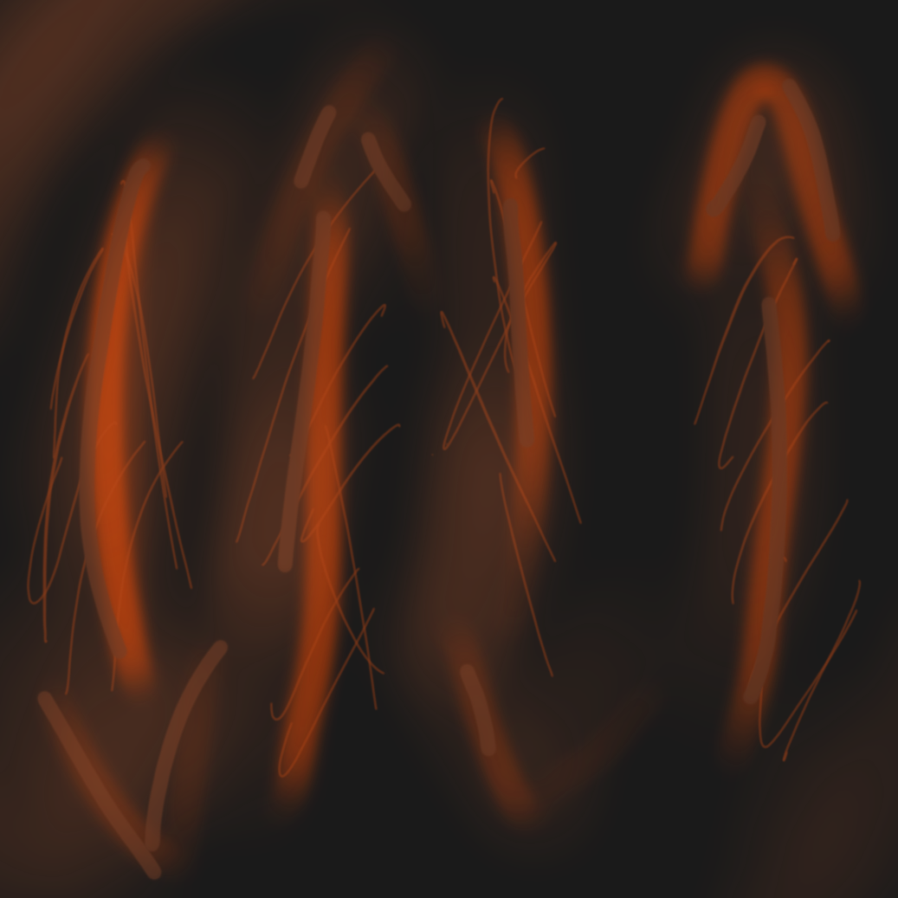
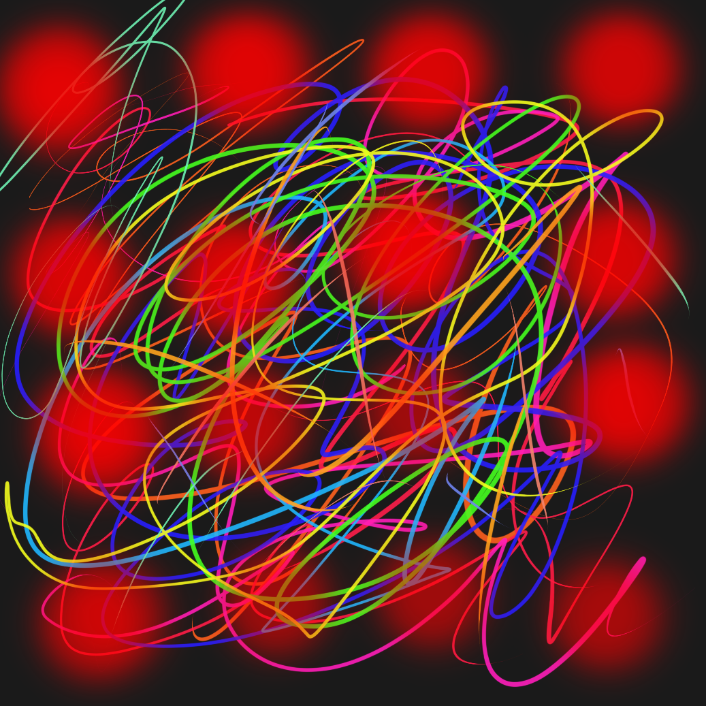
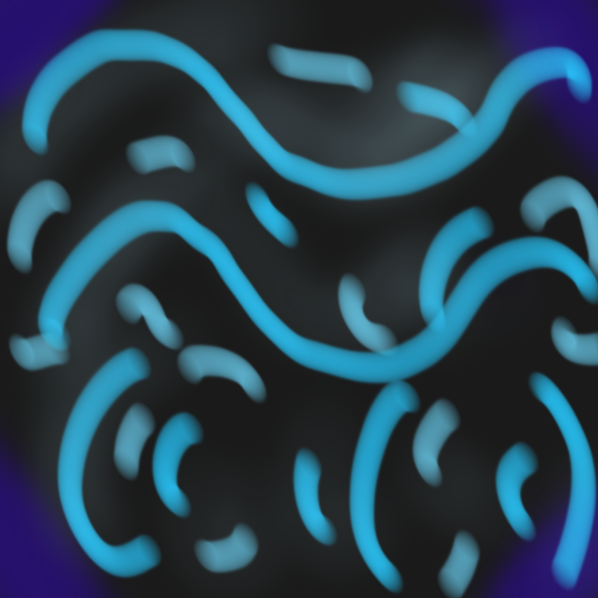

Pieza I — Universidad
El bosque como habitad
Se grabaron estos sonidos en diferentes lugares de la universidad, asi mostrando todo lo que esta tiene, desde el ruido de los deportistas, la actividad en clase y la fuente en sus afueras

El sonido del deporte

La clase

Fluir como fuente